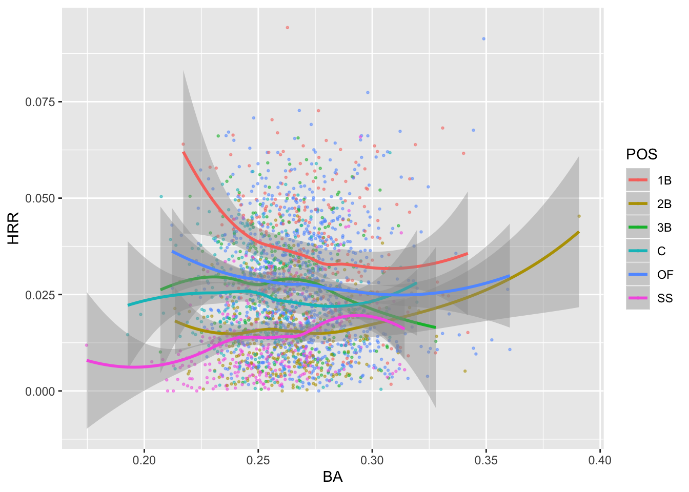

Chapter 2 dplyr and tidyr
library(tidyverse)
library(gridExtra)
batting <- as_tibble(Lahman::Batting)
fielding <- as_tibble(Lahman::Fielding)2.1 Hoofin’ it with dplyr
Condense batting stats into player career totals, keep only those >= 500 games.
is_col <- names(batting)[c(1, 2, 4, 6:17)]
is_num <- names(batting)[sapply(batting, is.numeric)]
gt_500 <- batting %>%
select(is_col) %>%
select(-teamID) %>%
drop_na() %>%
group_by(playerID) %>%
summarize_at(is_col[-(1:3)], sum, na.rm = T) %>%
filter(G >= 500)All Ha~ Green~ statistics to confirm that the data reduction looks right:
batting %>%
filter(str_detect(playerID, "greenha")) # a taste of `stringr`## # A tibble: 14 x 22
## playerID yearID stint teamID lgID G AB R H X2B X3B
## <chr> <int> <int> <fct> <fct> <int> <int> <int> <int> <int> <int>
## 1 greenha… 1930 1 DET AL 1 1 0 0 0 0
## 2 greenha… 1933 1 DET AL 117 449 59 135 33 3
## 3 greenha… 1934 1 DET AL 153 593 118 201 63 7
## 4 greenha… 1935 1 DET AL 152 619 121 203 46 16
## 5 greenha… 1935 1 BRO NL 2 0 0 0 0 0
## 6 greenha… 1936 1 DET AL 12 46 10 16 6 2
## 7 greenha… 1937 1 DET AL 154 594 137 200 49 14
## 8 greenha… 1938 1 DET AL 155 556 144 175 23 4
## 9 greenha… 1939 1 DET AL 138 500 112 156 42 7
## 10 greenha… 1940 1 DET AL 148 573 129 195 50 8
## 11 greenha… 1941 1 DET AL 19 67 12 18 5 1
## 12 greenha… 1945 1 DET AL 78 270 47 84 20 2
## 13 greenha… 1946 1 DET AL 142 523 91 145 29 5
## 14 greenha… 1947 1 PIT NL 125 402 71 100 13 2
## # … with 11 more variables: HR <int>, RBI <int>, SB <int>, CS <int>,
## # BB <int>, SO <int>, IBB <int>, HBP <int>, SH <int>, SF <int>,
## # GIDP <int>Positions by game.
fielding %>%
group_by(POS) %>%
count(wt = G)## # A tibble: 7 x 2
## # Groups: POS [7]
## POS n
## <chr> <int>
## 1 1B 482698
## 2 2B 480968
## 3 3B 482320
## 4 C 497547
## 5 OF 1451301
## 6 P 1106574
## 7 SS 479045Attach a column denoting their main fielding position.
is_field = names(fielding)[c(1, 6, 7, 9, 10, 11, 12, 13)]
fielding %>%
select(is_field) %>%
map(~ sum(is.na(.)))## $playerID
## [1] 0
##
## $POS
## [1] 0
##
## $G
## [1] 0
##
## $InnOuts
## [1] 29929
##
## $PO
## [1] 0
##
## $A
## [1] 0
##
## $E
## [1] 1
##
## $DP
## [1] 0That’s odd, just one error NA.
fielding %>%
filter(is.na(E))## # A tibble: 1 x 18
## playerID yearID stint teamID lgID POS G GS InnOuts PO A
## <chr> <int> <int> <fct> <fct> <chr> <int> <int> <int> <int> <int>
## 1 fordbi01 1936 1 BSN NL P 1 NA NA 0 0
## # … with 7 more variables: E <int>, DP <int>, PB <int>, WP <int>,
## # SB <int>, CS <int>, ZR <int>Removing InnOuts is a good idea, too many missing, and those NAs aren’t relevant to the analysis.
is_field = names(fielding)[c(1, 6, 7, 10, 11, 12, 13)]
pos_tot <- fielding %>%
select(is_field) %>% # cull columns
drop_na() %>% # drop the missing value
group_by(playerID, POS) %>% # want the most G by POS assigned to playerID
summarize_all(sum) %>%
ungroup() %>%
filter(G >= 100) %>% # only those with 100 G at a POS
arrange(playerID, desc(G)) %>% # if G instead of desc(G), use last(POS)
group_by(playerID) %>%
mutate(pos1 = first(POS)) %>%
filter(POS == pos1) %>% # assign position with most games to POS
select(-pos1)2.2 tidyr and relational data
Add fielding info to batting tibble.
(batpos <- gt_500 %>%
left_join(pos_tot, by = "playerID", suffix = c(".h", ".f")))## # A tibble: 2,667 x 19
## playerID G.h AB R H X2B X3B HR RBI SB CS
## <chr> <int> <int> <int> <int> <int> <int> <int> <int> <int> <int>
## 1 aaronha… 3298 12364 2174 3771 624 98 755 2297 240 73
## 2 abbotku… 702 2044 273 523 109 23 62 242 22 11
## 3 abernte… 681 181 12 25 3 0 0 9 0 0
## 4 abramca… 521 1543 246 422 62 19 32 134 11 18
## 5 abreubo… 2425 8480 1453 2470 574 59 288 1363 400 128
## 6 abreujo… 742 2913 398 858 180 13 146 488 8 3
## 7 ackledu… 635 2125 261 512 94 18 46 216 31 12
## 8 adairje… 1165 4019 378 1022 163 19 57 366 29 29
## 9 adamsbo… 797 2604 395 701 107 31 25 188 25 30
## 10 adamsgl… 661 1617 152 452 79 5 34 225 6 10
## # … with 2,657 more rows, and 8 more variables: BB <int>, SO <int>,
## # POS <chr>, G.f <int>, PO <int>, A <int>, E <int>, DP <int>Counts of positions.
batpos %>%
group_by(POS) %>%
count()## # A tibble: 8 x 2
## # Groups: POS [8]
## POS n
## <chr> <int>
## 1 <NA> 2
## 2 1B 254
## 3 2B 277
## 4 3B 270
## 5 C 300
## 6 OF 890
## 7 P 378
## 8 SS 296NAs are likely DHs.
pos_nas <- batpos %>%
filter(is.na(POS))
batting %>%
inner_join(pos_nas, by = "playerID")## # A tibble: 26 x 40
## playerID yearID stint teamID lgID G AB.x R.x H.x X2B.x X3B.x
## <chr> <int> <int> <fct> <fct> <int> <int> <int> <int> <int> <int>
## 1 moraljo… 1973 1 OAK AL 6 14 0 4 1 0
## 2 moraljo… 1973 2 MON NL 5 5 0 2 0 0
## 3 moraljo… 1974 1 MON NL 25 26 3 7 4 0
## 4 moraljo… 1975 1 MON NL 93 163 18 49 6 1
## 5 moraljo… 1976 1 MON NL 104 158 12 50 11 0
## 6 moraljo… 1977 1 MON NL 65 74 3 15 4 1
## 7 moraljo… 1978 1 MIN AL 101 242 22 76 13 1
## 8 moraljo… 1979 1 MIN AL 92 191 21 51 5 1
## 9 moraljo… 1980 1 MIN AL 97 241 36 73 17 2
## 10 moraljo… 1981 1 BAL AL 38 86 6 21 3 0
## # … with 16 more rows, and 29 more variables: HR.x <int>, RBI.x <int>,
## # SB.x <int>, CS.x <int>, BB.x <int>, SO.x <int>, IBB <int>, HBP <int>,
## # SH <int>, SF <int>, GIDP <int>, G.h <int>, AB.y <int>, R.y <int>,
## # H.y <int>, X2B.y <int>, X3B.y <int>, HR.y <int>, RBI.y <int>,
## # SB.y <int>, CS.y <int>, BB.y <int>, SO.y <int>, POS <chr>, G.f <int>,
## # PO <int>, A <int>, E <int>, DP <int>Drop these two DHs.
batpos <- batpos %>%
drop_na()Now we could explore many aspects of hitting stats vs. position, and see what position players were better fielders or better hitters, or if neither we can see if they played for the Expos.
batpos %>%
filter(POS == "SS") %>%
mutate(BA = H / AB) %>% # batting average, hits / at bats
mutate(Err = E / (PO + A)) %>% # error rate, errors / (put outs + assists)
mutate(HRR = HR / AB) %>% # home run rate, home runs / at bats
ggplot(aes(Err, BA)) +
geom_point(aes(color = HRR)) +
geom_smooth()## `geom_smooth()` using method = 'loess' and formula 'y ~ x'temp <- batpos %>%
mutate(BA = H / AB) %>% # batting average, hits / at bats
filter(between(BA, 0.01, 0.49)) %>%
mutate(Err = E / (PO + A)) %>% # error rate, errors / (put outs + assists)
mutate(HRR = HR / AB) # home run rate, home runs / at bats
p1 <- temp %>%
ggplot(aes(Err, BA, color = POS)) +
geom_point(alpha = 0.5, size = 0.5) +
geom_smooth(aes(group = POS)) +
coord_cartesian(xlim = c(0, 0.1), ylim = c(0.1, 0.42))
p2 <- temp %>%
filter(POS != "P") %>%
ggplot(aes(BA, HRR, color = POS)) +
geom_point(alpha = 0.5, size = 0.5) +
geom_smooth(aes(group = POS))
p1## `geom_smooth()` using method = 'loess' and formula 'y ~ x'p2## `geom_smooth()` using method = 'loess' and formula 'y ~ x'
ggsave('plots/pos-bat.pdf', arrangeGrob(p1, p2))## Saving 7 x 5 in image
## `geom_smooth()` using method = 'loess' and formula 'y ~ x'
## `geom_smooth()` using method = 'loess' and formula 'y ~ x'